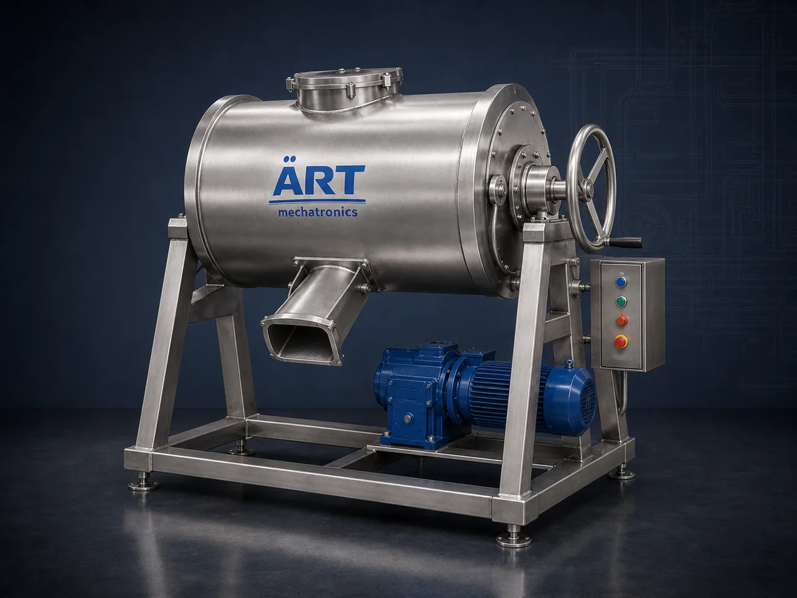

Industrial Wet Grinder (Wet Grinding Machine for Pastes, Batters & Slurries)
An Industrial Wet Grinder is a grinding machine that reduces soaked, soft or liquid-carrying material into a smooth paste, batter or slurry while water or another liquid is present in the grinding zone.

About the Wet Grinder
Wet grinders are used wherever the finished product is a paste or a suspension: batter for idli and dosa, wet masala and chutney pastes, soaked pulses, nut and seed pastes, cocoa and sesame preparations, and slurries in chemical and mineral processing. ART Mechatronics supplies industrial wet grinding machines built for plant duty, with hygienic construction options and feed and discharge arranged to suit the line.
One machine, many names
Buyers search for this equipment under many terms — we manufacture all of them:
Working Principle of Wet Grinder
Material is washed and soaked before grinding using:
Prepared material and liquid are fed into the grinding chamber through:
Material is ground between the grinding elements while liquid is present in the chamber.
Grinding wet keeps the batch cool and dust-free
Grinding time and liquid addition are adjusted to reach the required texture.
Gives a uniform paste or batter
Finished paste or batter leaves the machine through:
Contact parts are washed down between products through:
Supports hygienic changeover between products
Types of Wet Grinders
Industries Using Wet Grinders
🍛 Food Processing
- Idli, dosa and vada batter
- Wet masala, chutney and curry pastes
🌾 Agro, Pulses & Grains
- Soaked pulses and grains
- Rice and lentil batters
🥜 Nuts, Seeds & Confectionery
- Nut and seed pastes
- Cocoa and sesame preparations
💊 Pharmaceutical & Ayurvedic
- Herbal and ayurvedic pastes
- Wet grinding of soaked material
⚗️ Chemical & Cosmetic
- Pigment and paste preparation
- Cream and lotion bases
🏗️ Minerals & Ceramics
- Wet slurry grinding
- Ceramic and mineral pastes
Features & Advantages
- Smooth, uniform paste and batter texture
- Dust-free grinding because liquid is present
- Keeps the material cool while grinding
- Food-grade contact part options
- Easy wash-down between products
- Batch or continuous arrangements
- Built for continuous plant duty
Technical Highlights
- Capacity: Custom engineered to the application
- Operation: Batch or continuous
- Grinding Elements: Stone or disc type as specified
- Contact Parts: Stainless steel construction options
- Discharge: Gravity, valve or pump transfer
- Automation: PLC-based control (optional)
Turnkey Wet Grinding Solutions
ART Mechatronics offers:
- Product trials and machine selection
- Soaking, feeding and grinding line layout
- Equipment manufacturing
- Integration with downstream mixing, filling and packing
- Installation & commissioning
- After-sales service & AMC
Why Choose ART Mechatronics
- Wet grinding machines built for plant-scale duty
- Hygienic, wash-down friendly construction options
- Line layout designed around the product
- Integrates with ART mixing, conveying and packing equipment
- Support from product trials through to commissioning
Applications
- Batter & Idli Dosa Plants
- Spice & Masala Paste Units
- Chutney & Sauce Manufacturing
- Pulses & Grain Processing Units
- Nut & Seed Paste Plants
- Ayurvedic & Herbal Processing Units
- Cosmetic & Chemical Paste Plants
Related Size Reduction & Grinding machines
Get pricing & specs for the Wet Grinder
Share the product, target capacity, current process and plant location. These details help our engineers discuss the right machine or line configuration.
One partner, from design to start-up
ART Mechatronics designs, manufactures, installs and commissions your Wet Grinder solution with regional presence in India, UAE and Thailand.